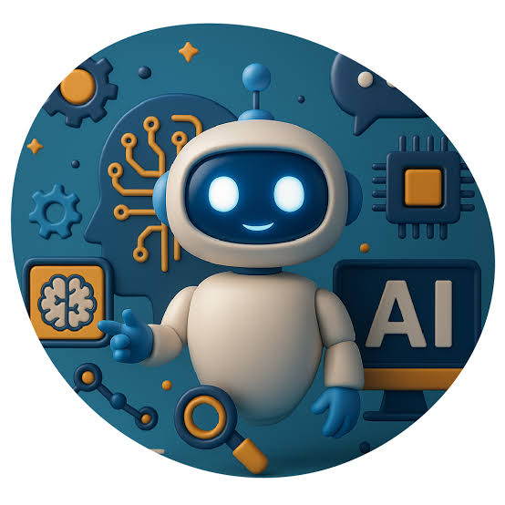
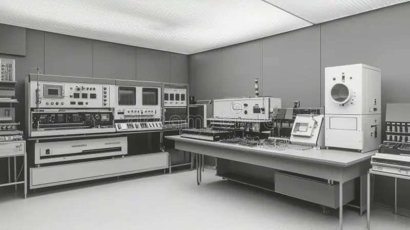

Historia y Evolución
El concepto de Inteligencia Artificial nació formalmente en la década de 1950. En 1950, el matemático Alan Turing propuso el "Test de Turing", una prueba diseñada para evaluar si una máquina puede imitar la conversación humana de forma indistinguible.
En 1956, durante la célebre Conferencia de Dartmouth, pioneros como John McCarthy y Marvin Minsky acuñaron el término "Inteligencia Artificial". Tras décadas de avances intermitentes e "inviernos informáticos", el aumento explosivo del poder de cómputo y el Big Data en los últimos años impulsó la era dorada de la IA que vivimos hoy.
Línea de tiempo
- 1950: Alan Turing publica su artículo sobre si las máquinas pueden pensar y propone su famosa prueba.
- 1956: En la Conferencia de Dartmouth se acuña el término «Inteligencia Artificial».
- 1966: Joseph Weizenbaum crea ELIZA, uno de los primeros programas que simulaba una conversación.
- 1997: La computadora Deep Blue de IBM vence al campeón mundial de ajedrez Garry Kasparov.
- 2012: Las redes neuronales profundas logran un gran salto en el reconocimiento de imágenes.
- 2016: AlphaGo derrota a Lee Sedol, campeón de Go, un juego mucho más complejo que el ajedrez.
- 2022: Se popularizan los asistentes de IA generativa capaces de conversar y escribir textos.
Los «inviernos» de la IA
Hubo épocas en que las expectativas fueron demasiado altas y los resultados no las alcanzaron. Los gobiernos y las empresas redujeron el dinero para investigar; a esos periodos se les llama «inviernos de la IA» (uno a mediados de los años 70 y otro a finales de los 80).
Lo que permitió el renacimiento fue la combinación de tres factores: computadoras mucho más potentes, enormes cantidades de datos y mejores algoritmos.
